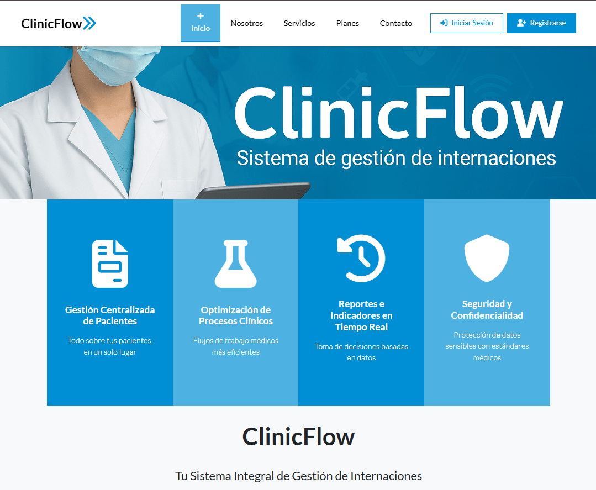

ClinicFlow
es una plataforma web moderna y segura desarrollada para la comercialización de planes de suscripción del sistema de gestión de pacientes ClinicFlow. Su objetivo principal es facilitar la adquisición del software mediante una experiencia de compra en línea intuitiva, eficiente y confiable para clientes potenciales (clínicas, hospitales, consultorios), así como proporcionar un panel de administración para la gestión de productos y ventas.
Visitar Sitio